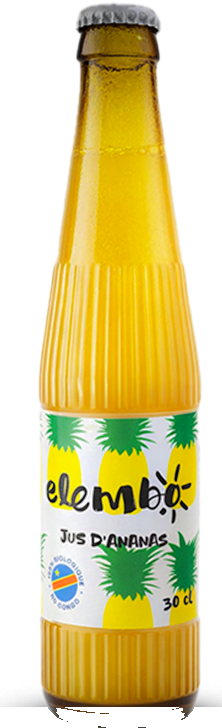
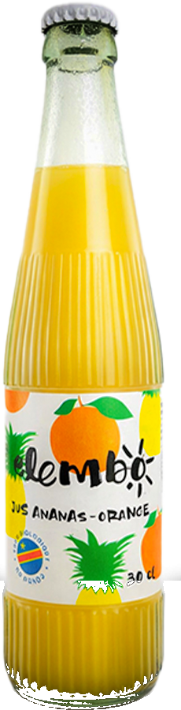
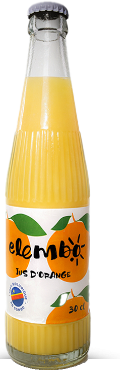
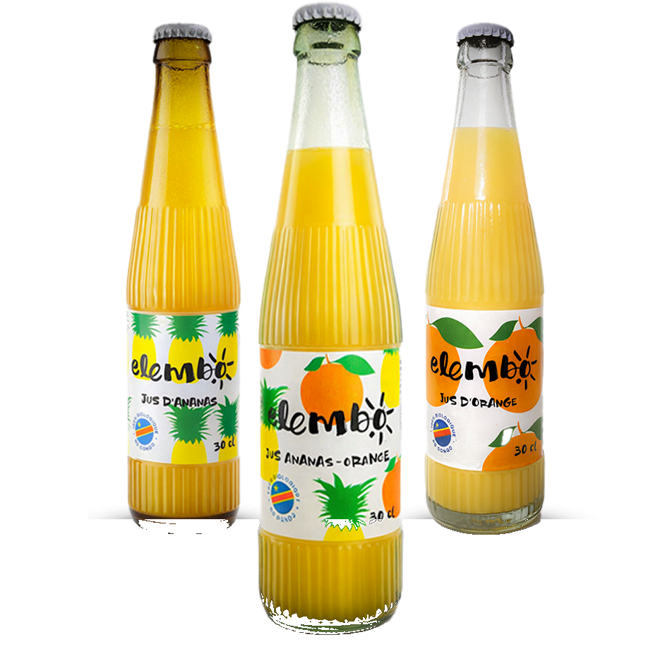

KONGO-CENTRAL
Des fruits
100 % congolais.
Fraîchement pressés,
puis mis en bouteille.



Jus
d'ananas
Ananas-
orange
Jus
d'orange
Dans la bouteille :
✓
Bio
✓
Sans additif chimique
✓
Faible en sucre ajouté
Une alternative saine aux sodas classiques.
Et la bouteille ?
En verre recyclé.
Moins de déchets dans les rues.

La vie saine se fait
avec du jus de fruits.
Elembo
Made in DRC
elembo-rdc.com